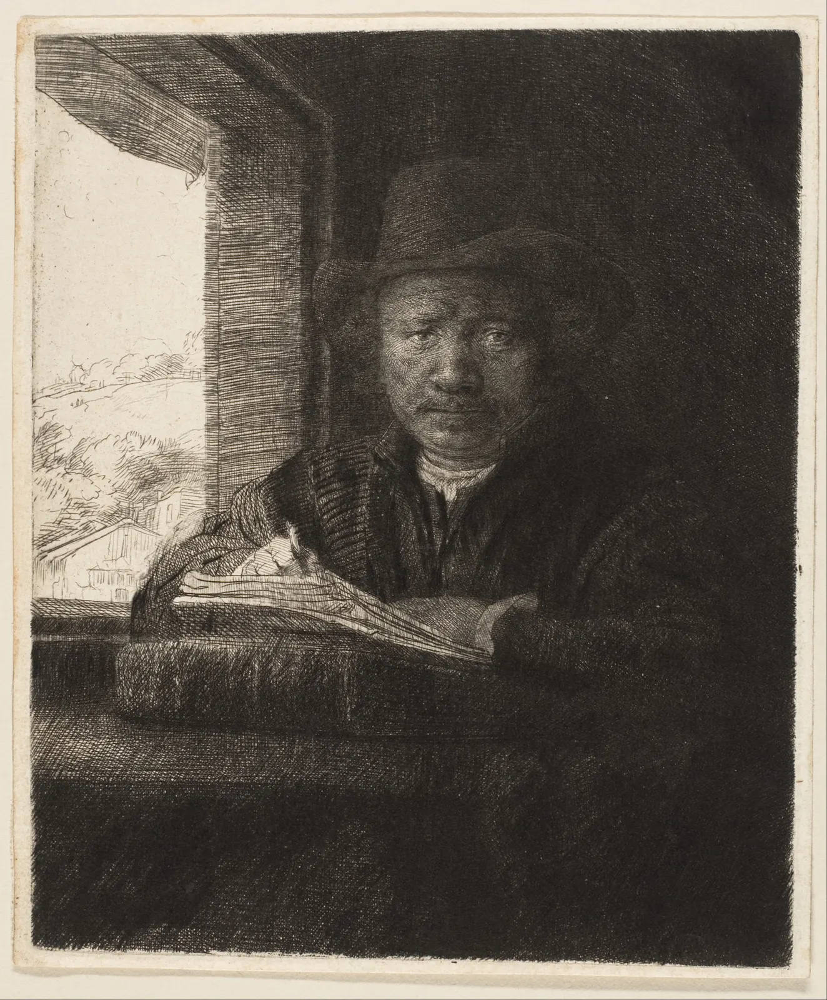

선과 해칭
종이에 이름을 두 번 써 보자. 한 번은 천천히 또박또박, 한 번은 평소처럼 빠르게. 글자는 같은데 두 줄의 인상은 전혀 다르다. 천천히 쓴 줄은 조심스럽고 조금 떨리며, 빠르게 쓴 줄은 가늘어졌다 굵어지며 흐른다. 드로잉의 선도 마찬가지다. 선은 형태의 가장자리를 알려 주는 동시에 그린 사람의 속도와 망설임, 손의 무게를 고스란히 남긴다. 그리고 선을 촘촘히 겹치면 선은 사라지고 회색이 나타난다. 펜 한 자루로 그림자를 만들 수 있는 이유다. 이 장은 선 하나의 표정에서 시작해 선을 쌓아 명도를 만드는 해칭, 점으로 쌓는 점묘, 동아시아 수묵의 필선과 준법까지 따라간 뒤, 그 선이 인쇄기를 지날 때 생기는 문제로 끝난다.
- 선의 굵기·속도·압력이 선의 표정을 어떻게 바꾸는지 직접 그어 보며 설명한다.
- 윤곽선의 굵기 차이(선의 무게)로 앞뒤와 무게를 나누는 관습을 안다.
- 해칭과 크로스해칭이 "잉크가 덮은 면적"으로 명도를 만든다는 것을 면적 평균 모형으로 계산하고, 어두운 단계일수록 흰 틈이 급히 좁아지는 이유를 안다.
- 해칭의 방향이 명도뿐 아니라 형태의 굴곡을 말한다는 것을 원통과 구에서 본다.
- 동아시아 회화의 필선과 준법(피마준·부벽준·우점준·미점)이 질감과 구조를 함께 나르는 방식을 안다.
- 축소 인쇄와 잉크 번짐이 해칭 간격을 어떻게 무너뜨리는지 계산하고, 인쇄를 견디는 간격 규칙을 세운다.
선 하나의 표정
2장에서 우리는 보이는 대로 보는 연습을 했다. 윤곽을 따라가고, 음형을 보고, 연필로 비례를 쟀다. 그렇게 찾은 모양을 종이에 옮기는 첫 도구가 선이다. 그런데 자연에는 선이 없다. 컵의 가장자리는 컵이 끝나고 벽이 시작되는 경계일 뿐, 거기에 검은 줄이 그어져 있지는 않다. 드로잉의 선은 경계를 대신하는 약속이고, 그 약속을 어떻게 긋느냐가 그림의 성격을 정한다.
선을 이루는 변수는 크게 셋이다. 선의 굵기(Line weight)는 선이 얼마나 두꺼운가, 속도(Speed)는 손이 얼마나 빨리 지나갔는가, 압력(Pressure)은 도구를 얼마나 세게 눌렀는가다. 세 변수는 도구에 따라 서로 얽힌다. 피그먼트 펜(가는 촉의 수성 안료 펜)은 압력을 바꿔도 굵기가 거의 같고, 빨리 그으면 잉크가 덜 묻어 조금 가늘어지거나 끊길 뿐이다. 연필은 누르는 만큼 짙어지고 조금 굵어진다. 붓은 셋이 가장 크게 얽혀, 천천히 누르면 굵고 빨리 들어 올리면 가늘어진다.
아래 판에 직접 선을 그어 본다. 처음에는 예시 선 세 줄이 있다. 위는 천천히 망설이며 그은 선, 가운데는 빠르고 자신 있게 그은 곡선, 아래는 천천히 들어가 빨라졌다가 천천히 끝나는 선이다. 도구를 바꾸면 같은 손놀림이 그 도구로 어떻게 남는지 다시 그린다.
같은 손놀림, 세 가지 도구
마지막 줄을 보면 선의 표정이 어디서 오는지 알 수 있다. 같은 경로라도 속도가 바뀌는 곳에서 굵기와 진하기가 바뀐다. 빠르고 확신 있는 선은 시작과 끝이 가늘어지며 공기를 가르듯 지나가고, 느리고 망설이는 선은 굵기가 고르지 않으며 작은 떨림이 쌓인다. 어느 쪽이 "좋은 선"인 것은 아니다. 바람에 흔들리는 풀은 빠른 선이, 오래된 나무 계단의 닳은 모서리는 천천히 더듬는 선이 더 어울릴 수 있다. 선을 고르는 기준은 그리는 대상과 전하려는 느낌이다.
선의 무게: 굵기로 앞뒤를 나누기
굵기가 일정한 펜으로도 선의 굵기를 바꿀 수 있다. 같은 자리를 한 번 더 긋거나, 굵은 촉의 펜으로 바꾸면 된다. 오래된 관습 가운데 하나가 선의 무게(Line weight hierarchy) 구분이다. 덩어리의 바깥 윤곽은 굵게, 덩어리 안쪽의 모서리와 주름은 가늘게 긋는다. 물체가 바닥에 닿는 쪽, 그림자가 지는 쪽, 다른 물체와 겹쳐 앞에 놓인 쪽의 선은 굵게, 빛을 받는 쪽은 가늘게 하거나 아예 끊는다. 가까운 것은 굵게, 먼 것은 가늘게 그리는 것도 같은 생각이다.
이 규칙은 기하학이 아니라 관습이다. 만화와 일러스트레이션, 건축 도면, 제품 스케치가 비슷한 관습을 쓰지만 세부는 분야마다 다르다. 건축 도면에서는 잘린 단면의 선을 가장 굵게, 멀리 보이는 선을 가늘게 하는 식으로 굵기마다 뜻을 정해 둔다. 반대로 굵기가 일정한 선만 쓰는 그림체도 있다. 일본의 우키요에 판화나 유럽의 "리뉴 클레르"(맑은 선, 벨기에 만화가 에르제의 『땡땡의 모험』으로 대표되는 그림체)는 거의 일정한 윤곽선으로 평평하고 맑은 화면을 만든다. 선의 무게를 쓸지 말지도 무엇을 전하려는가의 문제다.
해칭: 선으로 회색을 만들기
펜은 회색 잉크를 갖고 있지 않다. 종이 위에 남는 것은 검은 선과 흰 종이뿐이다. 그런데 가는 선을 일정한 간격으로 나란히 그으면, 조금 떨어져서 볼 때 선은 사라지고 회색 면이 보인다. 이렇게 평행선을 반복해 명도를 만드는 기법이 해칭(Hatching)이고, 방향이 다른 해칭을 겹쳐 더 어둡게 만드는 것이 크로스해칭(Cross-hatching)이다. 15세기 독일의 동판화가들과 알브레히트 뒤러(Albrecht Dürer), 17세기 렘브란트의 에칭은 이 방법으로 빛과 그림자의 모든 단계를 만들어 냈다.
우리 눈이 선을 회색으로 보는 것은 눈의 해상도에 한계가 있기 때문이다. 눈은 아주 촘촘한 무늬를 하나하나 가르지 못하고 그 영역의 평균 밝기를 본다. 그러면 해칭 면의 밝기는 "잉크가 덮은 면적의 비율"로 정해진다. 인쇄 공학에서 망점 인쇄의 밝기를 계산할 때 쓰는 머리–데이비스 식(Murray–Davies equation, 1936)이 바로 이 면적 평균이다. 이 장은 해칭에 같은 식을 쓴다.
식에서 바로 알 수 있는 것이 하나 있다. 명도는 덮은 면적에 정비례하지 않는다. 이 책의 모델로 계산하면, 종이(L* 93)에서 명도를 16만큼 낮춰 L* 77을 만들려면 면적의 약 39%를 덮어야 하는데, 다시 16을 낮춰 L* 61로 가려면 67%, L* 45로 가려면 86%를 덮어야 한다. 사람의 눈이 어두운 쪽의 작은 빛 차이에 예민하기 때문에, 어두운 단계로 갈수록 "남은 흰 틈"을 아주 조금씩만 줄여야 한다. 해칭이 어두운 쪽에서 갑자기 새까맣게 뭉치기 쉬운 이유다.
아래에서 선 굵기와 간격, 겹친 방향의 수를 바꾸며 해칭 면을 만든다. 왼쪽은 확대한 모습, 오른쪽은 화면에서 거의 실제 크기로 그린 같은 해칭이다. 눈을 가늘게 뜨거나 한 걸음 물러나 오른쪽 견본이 회색 견본과 같아 보이는지 확인한다.
선 굵기·간격·방향으로 명도 만들기
간격을 넓힌 끝에서 본 것처럼, 해칭이 회색으로 녹으려면 보는 거리가 중요하다. 반대로 간격을 좁힌 끝에서 본 것처럼, 흰 틈이 너무 좁아지면 선이 사라지고 검은 덩어리가 된다. 해칭은 이 두 끝 사이에서 산다. 그 사이에서 펜 그림의 화가들은 같은 명도라도 일부러 선이 보이게 두어 손맛을 남기기도 하고, 선을 아주 촘촘히 해 사진처럼 매끈한 회색을 만들기도 한다.
크로스해칭과 명도 단계
한 방향 해칭만으로도 간격을 바꿔 여러 명도를 만들 수 있지만, 어두운 쪽으로 갈수록 간격이 선 굵기에 바짝 붙어 손으로 고르게 긋기 어렵다. 그래서 화가들은 어두운 단계를 방향을 겹쳐 만든다. 첫 층을 고르게 깐 뒤 각도를 바꾼 둘째 층을 얹고, 더 어두운 곳에만 셋째 층을 얹는다. 층마다 간격이 넉넉해 손이 편하고, 흰 틈이 여러 방향으로 남아 어두운 곳에서도 숨이 쉬어진다.
층을 겹치는 각도는 경험칙이 있다. 첫 층과 둘째 층이 직각이면 깔끔하지만 그물이나 격자처럼 보이기 쉽다. 30~45도쯤 비스듬히 겹치면 무늬가 덜 도드라지고 면이 부드러워진다. 반대로 거의 같은 방향(5~10도 차이)으로 겹치면 두 층의 선이 서로 엇갈리며 넓은 물결무늬가 생긴다. 인쇄에서 망점이 엇갈려 생기는 무아레(Moiré)와 같은 현상이다.
단계표를 만들어 보면 대부분 같은 실수를 한다. 둘째 칸을 너무 짙게 시작해 첫 칸과 둘째 칸의 차이만 크고, 넷째와 다섯째 칸은 차이가 없다. 식에서 본 대로 첫 단계의 해칭은 생각보다 성겨도 충분하고, 마지막 단계의 흰 틈은 생각보다 넓게 남겨야 한다.
형태를 따라가는 선
해칭의 선은 명도만 만드는 것이 아니라 방향도 갖는다. 그리고 그 방향이 형태에 대해 말한다. 원통의 둘레를 따라 휘는 해칭은 원통이 둥글다는 것을, 바닥을 따라 눕는 해칭은 바닥이 수평이라는 것을 알려 준다. 물체의 표면을 따라 흐르는 이런 선을 단면선(Cross-contour line)이라고 부른다. 물체를 얇게 잘랐을 때 생기는 단면의 둘레를 표면 위에 그린 선이라는 뜻이다(7장에서 구조선으로 다시 쓴다).
아래에서 같은 명도 지도를 세 가지 방향의 해칭으로 칠해 본다. 명도의 배치는 셋이 같다. 다른 것은 선이 가는 방향뿐이다.
해칭의 방향이 형태를 말한다
곧은 평행선이 무조건 틀린 것은 아니다. 렘브란트의 에칭이나 많은 펜 드로잉은 형태와 상관없는 비스듬한 평행선으로 그림자를 덮으면서도 공간이 살아 있다. 평행선이 화면 전체에서 같은 방향이면 그것은 형태를 말하는 대신 "그림자"라는 하나의 층으로 읽히고, 형태는 윤곽과 명도 배치가 맡는다. 형태를 따르는 선은 입체를 강조하고, 일정한 방향의 선은 화면을 차분하게 묶는다. 한 그림 안에서 둘을 섞을 때는 "어디서 형태를 말할지"를 정해 두면 선이 시끄러워지지 않는다.

에칭은 동판에 바른 방식막을 바늘로 긁어 선을 내고, 산에 담가 긁힌 자리만 부식시킨 다음 잉크를 채워 찍는 판화다. 선을 그리는 손놀림이 펜과 비슷해서 렘브란트의 에칭은 펜 드로잉 공부의 오랜 교재였다. 같은 판을 고쳐 가며 여러 번 찍은 것을 "단계(state)"라고 부르는데, 이 그림은 아홉 단계 가운데 네 번째로, 판에 선을 더하고 지우며 명도를 고쳐 간 과정의 한 순간이다.
점묘와 다른 쌓기
선 대신 점을 찍어도 명도가 생긴다. 펜 끝으로 점을 하나하나 찍어 명도를 쌓는 기법을 점묘(Stippling)라고 한다. 원리는 해칭과 같다. 점들이 덮은 면적의 비율이 명도를 정한다. 다른 점은 방향이 없다는 것이다. 그래서 점묘는 표면의 방향을 말하지 않고 빛의 양만 말한다. 털, 돌, 피부처럼 결이 뚜렷하지 않은 표면이나, 선이 남기는 손맛을 지우고 싶은 과학 일러스트레이션(곤충, 화석, 고고학 유물 도해)에 오래 쓰였다.
점을 아무 데나 찍으면 어떻게 될까. 점이 고르게 흩어진 것처럼 보여도 아무렇게나 찍은 점은 우연히 겹치고 뭉친다. 아래에서 점의 크기와 밀도를 바꾸며, 점을 무작위로 찍을 때와 격자처럼 고르게 찍을 때를 비교한다.
점으로 쌓는 명도와 그 비용
점묘의 숙련자들은 무작위처럼 보이되 점끼리 너무 붙지 않게 일정한 거리를 두며 찍는다. 컴퓨터 그래픽에서도 이런 "고르지만 규칙적이지 않은" 점 배치를 따로 연구한다. 무늬가 보이지 않으면서 얼룩도 없기 때문이다. 손으로 찍는 점묘는 시간이 많이 들어서, 실제 펜 일러스트레이션에서는 넓은 면은 해칭으로 깔고 점은 가장자리를 부드럽게 녹이거나 질감이 필요한 곳에만 쓰는 경우가 많다.
이 밖에도 명도를 쌓는 손은 많다. 작은 원이나 꼬불꼬불한 선을 반복하는 스크리블(Scribble)은 거칠고 빠른 질감을, 연필이나 콘테를 눕혀 문지르는 톤은 선 없는 부드러운 명도를 만든다. 쇠라의 콘테 크레용 소묘처럼 선의 흔적을 거의 지우고 거친 종이결 위에 명도만 남기는 길도 있다. 펜 드로잉은 지우거나 문지를 수 없다는 제약 때문에 선과 점의 질서가 그림의 성격이 된다.
동아시아의 필선과 준법
동아시아 회화에서 선은 처음부터 그림의 주인공이었다. 붓은 앞에서 본 것처럼 속도와 압력이 굵기와 진하기를 크게 바꾸는 도구라서, 같은 붓으로도 전혀 다른 선이 나온다. 인물화에서는 오래전부터 옷 주름을 긋는 선의 유형을 나눠 불렀다. 굵기가 철사처럼 일정하고 단단한 선(흔히 "철선묘"라고 부른다), 누에가 실을 뽑듯 가늘고 고르게 이어지는 선, 난초 잎처럼 가운데가 부풀고 양 끝이 가늘어지는 선(난엽묘)이 그 예다. 명나라 이후에는 이런 유형을 열여덟 가지로 정리한 목록이 화보에 실리기도 했다. 앞의 시뮬레이터로 말하면 철선묘는 피그먼트 펜에, 난엽묘는 민감도를 높인 붓에 가깝다.
산수화에서는 바위와 산의 표면을 그리는 선을 따로 준법(皴法, Texture strokes)이라 부른다. 준(皴)은 원래 "주름"이라는 뜻이다. 서양의 해칭이 주로 빛과 그림자의 양을 쌓는 데 쓰였다면, 준법은 바위가 갈라진 결, 흙산의 부드러운 주름, 산의 뼈대를 선의 종류로 말한다. 명도와 질감과 구조를 한 번에 나르는 셈이다. 대표적인 준법 몇 가지와 그것으로 이름난 화가는 다음과 같다. 다만 실제 그림에서는 여러 준이 섞이고, 이름도 후대의 화론이 정리한 분류라는 점을 기억해 둔다.
- 피마준(披麻皴, Hemp-fiber strokes): 풀어 헤친 삼베 올처럼 길고 부드러운 선을 비탈을 따라 늘어뜨린다. 흙이 덮인 둥근 산에 어울린다. 10세기 남당의 동원과 거연, 원나라의 황공망이 대표로 꼽힌다.
- 부벽준(斧劈皴, Axe-cut strokes): 도끼로 찍어 낸 자국처럼 짧고 넓으며 한쪽이 날카로운 획이다. 깎아지른 바위에 어울린다. 남송의 이당, 마원, 하규의 그림에서 두드러진다.
- 우점준(雨點皴, Raindrop strokes): 빗방울처럼 짧고 굵은 점을 촘촘히 찍는다. 북송 범관의 「계산행려도」의 거대한 암벽이 흔히 예로 든다.
- 미점(米點, Mi dots): 옆으로 누운 먹점을 번지듯 겹쳐 비 내린 뒤의 젖은 산을 만든다. 북송의 미불과 미우인 부자의 이름에서 왔다. 조선의 정선도 흙산과 숲을 이런 먹점으로 그렸다.
아래에서 같은 바위에 준법을 바꿔 칠해 본다. 바위의 윤곽은 같고, 표면을 채우는 획의 종류만 바뀐다.
같은 바위, 다른 준법

왕시민의 그림에는 서양 해칭과 닮은 점과 다른 점이 함께 보인다. 선을 겹친 밀도로 어둠을 만든다는 점은 같다. 그러나 피마준의 선은 빛의 방향을 따라 그림자 쪽에 몰리기보다 산의 결을 따라 화면 전체에 흐르고, 명도는 그 결이 모이고 흩어지는 리듬으로 생긴다. 그리고 이 그림은 "황공망의 필의(筆意)를 따른다"고 밝힌 그림이다. 동아시아 회화에서 옛 대가의 준법과 필선을 익혀 자기 그림으로 다시 쓰는 일은 모방이 아니라 공부의 정식 방법이었다. 선의 종류가 하나의 언어처럼 전해졌다는 뜻이다.
인쇄되는 선: 해칭이 뭉칠 때
펜 드로잉의 상당수는 원화로 걸리지 않고 인쇄되어 읽힌다. 책의 삽화, 신문의 컷, 동네 안내 책자. 그런데 원화에서 좋던 해칭이 인쇄물에서는 새까맣게 뭉쳐 버리는 일이 흔하다. 원인은 두 가지다.
첫째, 축소다. 삽화는 흔히 인쇄 크기보다 크게 그려 줄여 싣는다. 선의 떨림과 실수가 함께 작아지기 때문이다. A4에 그려 A5에 실으면 길이가 1/√2, 약 71%로 줄어든다. 선 굵기도 간격도 함께 줄어드니 덮은 면적의 비율은 그대로일 것 같지만, 흰 틈 자체가 좁아져 다음 문제에 약해진다. 둘째, 번짐이다. 인쇄에서는 잉크가 종이에 스며들고 퍼지면서 선이 원래보다 조금 굵어진다. 인쇄 공학에서는 이를 망점이 커지는 현상, 곧 도트 게인(Dot gain)이라고 부른다. 번짐의 크기는 종이와 인쇄 방식에 따라 다르지만, 굵어지는 양이 선 굵기와 상관없이 비슷하다면 가장 가는 흰 틈이 가장 먼저 막힌다.
아래 시뮬레이터는 펜 드로잉 다섯 단계를 원화와 인쇄물로 나란히 보여 준다. 축소율과 번짐을 바꾸며, 어느 단계부터 흰 틈이 막히는지 본다. "첫 시안"은 이 장 끝의 서윤이 처음 그린 단계표이고, "수정안"은 그가 규칙을 세운 뒤 다시 그린 단계표다.
원화와 인쇄물: 다섯 단계 해칭은 살아남는가
시뮬레이터에서 본 것처럼, 인쇄를 견디는 해칭의 열쇠는 선의 굵기보다 흰 틈이다. 같은 명도라도 가는 선을 촘촘히 그은 해칭보다, 굵은 선을 성기게 그어 흰 틈을 넓게 남긴 해칭이 인쇄에 강하다. 그래서 인쇄용 펜 그림을 그리는 사람들은 흔히 "가장 어두운 곳에도 흰 틈을 남겨라", "가장 어두운 단계는 선을 더 넣지 말고 굵은 펜으로 바꿔라"라는 요령을 쓴다. 정확한 한계는 종이와 인쇄소마다 다르므로, 같은 조건의 교정쇄로 한 번 찍어 보는 것이 가장 확실하다.
서윤의 작업 노트
다섯 칸의 회색, 네 칸만 남은 교정쇄
창가의 컵과 화분을 연필로 재며 그린 지 한 주가 지났다. 서윤은 그 연필 구조선 위에 처음으로 펜을 올렸다. 「골목 산책」의 열두 점은 모두 펜 한두 자루로 그려 흑백으로 인쇄된다. 그러니 그림자도, 화분 흙의 어둠도, 창밖의 밝은 하늘도 전부 선의 밀도로 만들어야 한다. 토요일 모임에서 도경은 그림보다 먼저 명도 다섯 단계 띠를 만들어 오라고 했다. "회색 물감이 없는 사람은 회색을 몇 단계 가졌는지부터 알아야 해."
서윤은 원화를 A4 종이에 그리고 있었다. 책자는 A5라서 인쇄할 때 71%로 줄어든다. 0.3 mm 펜 하나로 만든 첫 단계표는 이랬다. 1단계는 종이, 2단계는 간격 0.6 mm의 한 방향 해칭, 3단계는 간격 0.5 mm의 두 방향, 4단계는 간격 0.4 mm의 두 방향, 5단계는 간격 0.35 mm의 세 방향. 원화에서는 다섯 칸이 모두 달라 보였다. 주인이 동네 인쇄소에 부탁해 컵 그림 한 장과 단계표를 A5 교정쇄로 뽑아 왔는데, 컵 아래 그림자가 한 덩어리 먹처럼 뭉쳐 있었고 단계표의 4·5단계는 구별되지 않았다.
서윤은 이 장의 모델로 계산해 보았다. 종이를 L* 93, 잉크를 L* 20으로 두면 첫 시안의 원화 명도는 93, 71.5, 46.7, 34.0, 20.9였다. 첫 칸과 둘째 칸 사이가 21.5나 벌어지고 마지막 두 칸은 13밖에 차이 나지 않아, 인쇄 전부터 고르지 않았다. 71%로 줄이고 선이 0.04 mm씩 굵어진다고 가정하면, 4단계의 흰 틈은 원화의 0.10 mm에서 0.03 mm로, 5단계는 0.05 mm에서 0으로 줄어 둘 다 막힌다. 인쇄물의 명도는 93, 66.1, 37.1, 20, 20. 교정쇄와 같은 결과였다. 번짐 0.04 mm는 서윤이 교정쇄를 돋보기로 보고 어림한 값이라, 계산은 정확한 예측이 아니라 원인을 가르는 데만 썼다.
도경의 처방은 짧았다. "어둠을 선을 더 넣어서 만들지 말고, 방향을 바꿔 쌓고 펜을 바꿔." 서윤은 규칙을 하나 세웠다. 원화에서 선 사이의 흰 틈을 0.3 mm 이상 남긴다. 71% 축소와 0.04 mm 번짐을 거쳐도 인쇄된 흰 틈이 약 0.17 mm로 남는 값이다. 0.3 mm 펜이라면 중심 간격을 0.6 mm 아래로 좁히지 않는다는 뜻이다. 그 규칙 안에서 다시 짠 수정안은 1단계 종이, 2단계 0.3 mm 한 방향 간격 1.0 mm, 3단계 0.3 mm 두 방향 간격 0.9 mm, 4단계 0.3 mm 세 방향 간격 0.8 mm, 5단계는 0.5 mm 펜으로 바꿔 세 방향 간격 0.9 mm. 모델로 계산한 인쇄물의 명도는 93, 78.7, 63.5, 47.8, 32.8로, 단계 사이가 14~16씩 고르게 벌어졌다. 두 번째 교정쇄에서 컵의 그림자는 짙지만 바닥의 나뭇결이 비쳐 보였다.
선 굵기도 정했다. 해칭과 안쪽 모서리는 0.3 mm, 덩어리의 바깥 윤곽과 바닥에 닿는 선, 가장 어두운 단계는 0.5 mm. 두 자루면 충분했다. 서윤은 대신 도경에게 휴대폰 카메라로 교정쇄를 찍어 화면에서 확대해 보는 법을 알려 주었다. 도경은 돋보기보다 낫다며, 다음 모임부터 단계표를 찍어 서로 비교하자고 했다.
L* 93
2단계 · 한 방향인쇄 L* 78.7
3단계 · 두 방향인쇄 L* 63.5
4단계 · 세 방향인쇄 L* 47.8
5단계 · 0.5 mm인쇄 L* 32.8
핵심 정리
- 선의 표정은 굵기·속도·압력에서 나온다. 도구가 민감할수록(연필보다 붓) 손의 속도와 망설임이 굵기와 진하기로 크게 남는다. 좋은 선은 하나가 아니라 대상과 전하려는 느낌에 맞는 선이다.
- 선의 무게는 관습이다. 바깥 윤곽·바닥·그늘 쪽·앞의 것은 굵게, 안쪽 모서리·빛 쪽·먼 것은 가늘게 그으면 명암 없이도 무게와 빛의 방향이 생긴다. 일정한 선만 쓰는 그림체도 있다.
- 해칭의 명도는 잉크가 덮은 면적의 비율로 정해진다(머리–데이비스 면적 평균). 방향을 겹치면 덮은 면적은 1 − (1 − w/s)k로 늘어, k배가 되지 않는다.
- 명도는 덮은 면적에 비례하지 않는다. 어두운 단계로 갈수록 흰 틈을 아주 조금씩 줄여야 하므로, 첫 단계는 생각보다 성기게, 마지막 단계는 생각보다 흰 틈을 넓게 남긴다.
- 해칭의 방향은 형태를 말한다. 표면을 따라 휘는 단면선은 입체를, 화면 전체에 같은 방향인 평행선은 그림자라는 한 층을 만든다. 점묘는 방향 없이 빛의 양만 말한다.
- 동아시아 회화의 필선과 준법(피마준·부벽준·우점준·미점)은 선의 종류로 질감과 구조와 명도를 함께 나른다. 옛 대가의 준법을 익혀 다시 쓰는 것은 공부의 정식 방법이었다.
- 인쇄에서는 축소와 번짐이 흰 틈을 좁혀 어두운 해칭부터 뭉친다. 선 굵기보다 흰 틈을 기준으로 간격 규칙을 세우고, 교정쇄로 확인한다.
확인 퀴즈
1. 0.3 mm 펜으로 간격 1 mm의 한 방향 해칭을 그었더니 면적의 30%가 덮였다. 같은 간격으로 방향만 바꾼 둘째 층을 겹치면 덮은 면적은 대략 얼마가 되는가?
2. 명도 다섯 단계 해칭 띠를 만들었더니 1·2단계 사이 차이는 크고 4·5단계는 거의 같아 보였다. 가장 알맞은 고침은?
3. A4에 그린 펜 그림을 A5 책자에 실었더니 원화에서는 괜찮던 짙은 크로스해칭이 검게 뭉쳤다. 이 현상을 가장 잘 설명하는 것은?
4. 동아시아 산수화의 준법(皴法)에 대한 설명으로 가장 알맞은 것은?